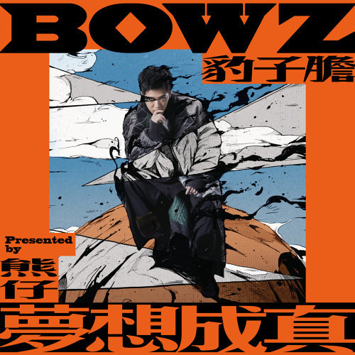
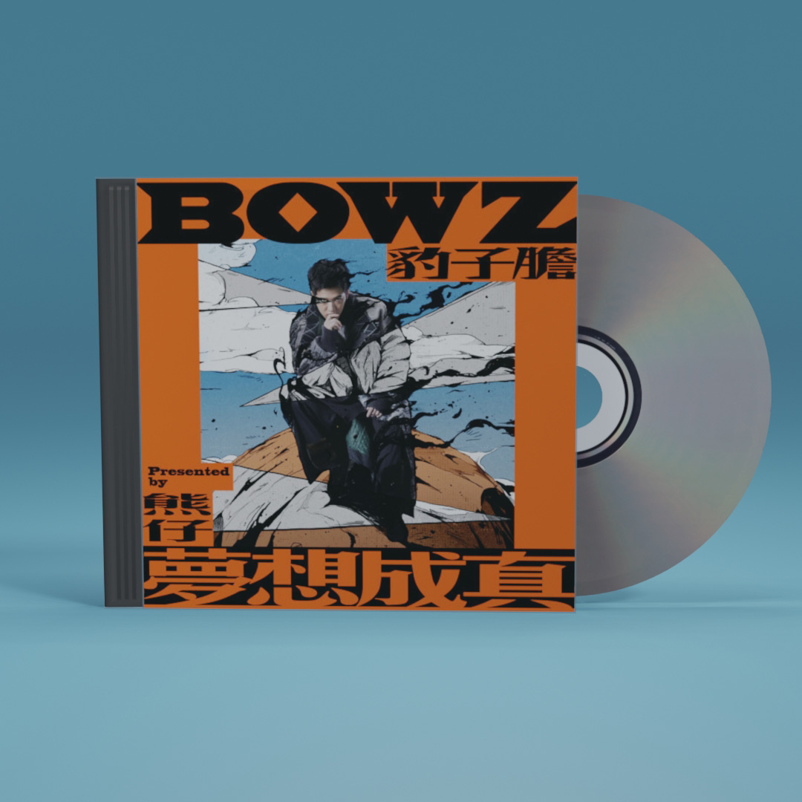
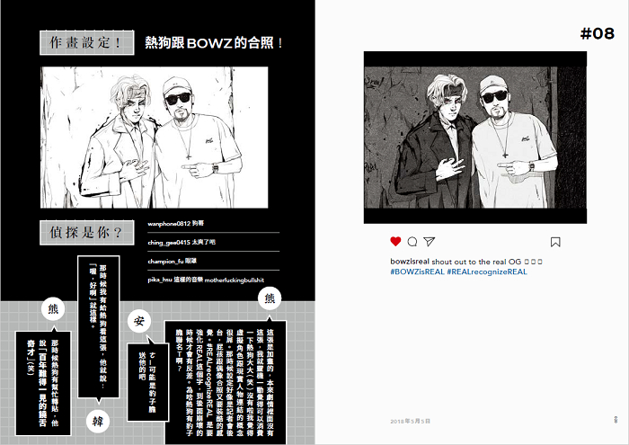
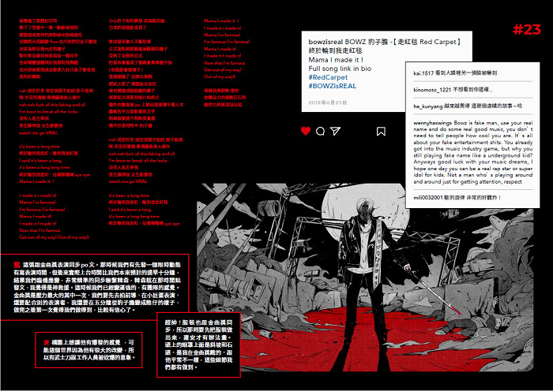

- 
- 
- 
- 
夢想成真
熊仔&豹子膽
歌曲
-
Intro (夢想成真)
-
給愛麗絲 Für Elise
-
禁愛令 Antilove
-
走紅毯 Red Carpet
-
假朋友真兄弟 FFRH
-
大頭大頭 Big Head
-
夢中夢 Dream within a Dream
-
卡提諾 CK101
-
失真 Derealization
-
...夢中夢中夢中夢中... Endless Dreams
-
夢 Pain
-
想 Arising
-
成 Removal
-
真 Liberation
專輯簡介
《夢想成真》是饒舌歌手熊仔以BOWZ豹子膽的虛構身份，在2019年4月發行的第二張專輯，宣傳期間以漫畫的方式，在Instagram（@bowzisreal）連載為專輯而生的一連串劇情，並且在一定的時間點上釋放出單曲，最後組織成龐大而且圖像化的《夢想成真》。
其次是，這個時候的熊仔已經得到了主流音樂大公司的資源，這讓他更有辦法去強化他想用專輯說出來的故事。（這在MV上有很明顯的差異。）
以下將以流行音樂聽眾的角度來撰寫，而非饒舌音樂聽眾。先講曲序：「Intro夢想成真」、「給愛麗絲」、「禁愛令」、「走紅毯」、「假朋友真兄弟」、「大頭大頭」、「夢中夢」feat.
小宇、「卡提諾」、「失真」、「...夢中夢中夢中夢中...」feat.蛋堡, 大支, LEO王, 呂士軒, 吳卓源, ØZI, 老莫, 韓森,
李權哲、「夢」、「想」、「成」、「真」。
「還是要再睡一下？」
「Intro夢想成真」由同門師妹陳瑾緗領銜開唱，一層層和聲堆疊配上弦樂帶了點詭譎。之後熊仔親自把「夢想成真」四個字斷成不同的Flow，呈現出三個截然不同的意思，向聽眾解釋中文的奧妙。同時這也是本張專輯的主軸，以豹子膽的身份來表達。
專輯進入第一章節《夢．想．成真》，BOWZ初登板以「給愛麗絲」作為開場，「給愛麗絲」的原曲在臺灣就是垃圾車的代表，以尚未得志的地下歌手的角度，用這首曲目Diss主流歌手，同時也跟聽眾表示這不是以往形象中的熊仔。
一開頭就用極誇張的語調吸引注視，把心中看不慣的事情直接了當的表達出來，聲線是十分兇狠的批判語氣。第二段開始有比較戲謔的表情來調和，接進快嘴的Verse後再轉回凶狠語氣，突顯了BOWZ高高在上的狂妄，而並非單純地憤怒。
Beat方面也是把這兩者兼具了，整首歌的Beat都是有點陰沉沉的灰暗風格，進入副歌的編排營造出的詭譎畫面感很不錯。一開始「麥克風」的地方，低沉的和聲隨著BOWZ越來越加重的聲音來做出一種逼近的感覺，第二次副歌彰顯的弦樂暗示著厄運降臨，之後貼到最近便開始開噴，但此刻卻使用了「啦啦啦」隨興的吟唱當作編曲，把惡夢玩弄人的形象具象化出來。
整首歌詞句句充滿了攻擊性，但依舊兼具著二韻到三韻，尖銳的詞彙之下還是保持著學院派的水平，雖然有些地方為了韻腳略顯些鑿痕，但瑕不掩瑜。
曲末，高反差甜美的女聲表示其背後的主流公司很欣賞非常Real的態度，想跟BOWZ簽約，為接下來的劇情做了轉折。BTW，找熱狗的兩句客串其實滿有趣的，畢竟熱狗確實轉了主流之後就一直被詬病沒辦法講得太敢，滿有巧思的。
台灣歌手熊仔以虛擬歌手豹子膽Bowz的名義創作的第二張概念專輯，由索尼音樂娛樂於2019年4月17日發行。
地下歌手BOWZ豹子膽起初對主流歌手嗤之以鼻，後來被音樂公司「諸神唱片」看好。因公司規定得在感情與合約之間作抉擇，選擇合約的BOWZ躍升主流歌壇，自己與身旁的人都改變態度，患了大頭症的BOWZ在直播節目上翻臉，到後來逐漸沒落，被點閱率所綁架，最後(疑似)車禍身亡、女友也身亡。後來證實BOWZ沒有死，在承受巨大的悲痛與失去（女友之死及前途的衰敗）。最後發現一切都是輪迴，發現自己的存在是虛擬的、是被造物主-熊仔創造出來的，身為薛西弗斯至始至終都在經歷著推石頭乞求投胎的過程。每當聽眾將這張專輯重播時，就是BOWZ重新投胎的時刻。